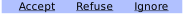
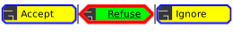

Module: naughty.list.actions
Manage a notification action list.
A notification action is a “button” that will trigger an action on the sender
process. notify-send doesn’t support actions, but libnotify based
applications do.

local notif = naughty.notification { title = 'A notification', message = 'This notification has actions!', actions = { naughty.action { name = 'Accept', }, naughty.action { name = 'Refuse', }, naughty.action { name = 'Ignore', }, } } wibox.widget { notification = notif, widget = naughty.list.actions, }
This example has a custom vertical widget template:
wibox.widget {
notification = notif,
base_layout = wibox.widget {
spacing = 3,
spacing_widget = wibox.widget {
orientation = 'horizontal',
widget = wibox.widget.separator,
},
layout = wibox.layout.fixed.vertical
},
widget_template = {
{
{
{
id = 'text_role',
widget = wibox.widget.textbox
},
widget = wibox.container.place
},
shape = gears.shape.rounded_rect,
shape_border_width = 2,
shape_border_color = beautiful.bg_normal,
forced_height = 30,
widget = wibox.container.background,
},
margins = 4,
widget = wibox.container.margin,
},
widget = naughty.list.actions,
}
This example has a horizontal widget template and icons:
wibox.widget {
notification = notif,
base_layout = wibox.widget {
spacing = 3,
spacing_widget = wibox.widget {
orientation = 'vertical',
widget = wibox.widget.separator,
},
layout = wibox.layout.flex.horizontal
},
widget_template = {
{
{
{
id = 'icon_role',
forced_height = 16,
forced_width = 16,
widget = wibox.widget.imagebox
},
{
id = 'text_role',
widget = wibox.widget.textbox
},
spacing = 5,
layout = wibox.layout.fixed.horizontal
},
id = 'background_role',
widget = wibox.container.background,
},
margins = 4,
widget = wibox.container.margin,
},
widget = naughty.list.actions,
}
This example uses the theme/style variables instead of the template. This is less flexible, but easier to put in the theme file. Note that each style variable has a beautiful equivalent.

wibox.widget {
notification = notif,
base_layout = wibox.widget {
spacing = 3,
spacing_widget = wibox.widget {
orientation = 'vertical',
widget = wibox.widget.separator,
},
layout = wibox.layout.flex.horizontal
},
style = {
underline_normal = false,
underline_selected = true,
shape_normal = gears.shape.octogon,
shape_selected = gears.shape.hexagon,
shape_border_width_normal = 2,
shape_border_width_selected = 4,
icon_size_normal = 16,
icon_size_selected = 24,
shape_border_color_normal = '#0000ff',
shape_border_color_selected = '#ff0000',
bg_normal = '#ffff00',
bg_selected = '#00ff00',
},
forced_height = beautiful.get_font_height(beautiful.font) * 2.5,
widget = naughty.list.actions,
}
See also:
Info:
- Copyright: 2017 Emmanuel Lepage Vallee
- Author: Emmanuel Lepage Vallee <elv1313@gmail.com>
Constructors
| naughty.list.actions (args, widget_template) | Create an action list. |
Functions
| naughty.list.actions.add_button (button) | Add a new awful.button to this widget. | Inherited from wibox.widget |
Object properties
| notification | notification | The actionlist parent notification. | |
| layout | widget | The actionlist layout. | |
| widget_template | table | The actionlist parent notification. | |
| style | table | A table with values to override each beautiful.notification_action values. |
|
| children | table | Get or set the children elements. | Inherited from wibox.widget |
| all_children | table | Get all direct and indirect children widgets. | Inherited from wibox.widget |
| forced_height | number or nil | Force a widget height. | Inherited from wibox.widget |
| forced_width | number or nil | Force a widget width. | Inherited from wibox.widget |
| opacity | number | The widget opacity (transparency). | Inherited from wibox.widget |
| visible | boolean | The widget visibility. | Inherited from wibox.widget |
| buttons | table | The widget buttons. | Inherited from wibox.widget |
Object methods
| :setup {[args]} | Set a declarative widget hierarchy description. | Inherited from wibox.widget |
| :emit_signal_recursive (signal_name, ...) | Emit a signal and ensure all parent widgets in the hierarchies also forward the signal. | Inherited from wibox.widget |
| :emit_signal (name, ...) | Emit a signal. | Inherited from gears.object |
| :connect_signal (name, func) | Connect to a signal. | Inherited from gears.object |
| :weak_connect_signal (name, func) | Connect to a signal weakly. | Inherited from gears.object |
Signals
| widget::layout_changed | When the layout (size) change. | Inherited from wibox.widget |
| widget::redraw_needed | When the widget content changed. | Inherited from wibox.widget |
| button::press | When a mouse button is pressed over the widget. | Inherited from wibox.widget |
| button::release | When a mouse button is released over the widget. | Inherited from wibox.widget |
| mouse::enter | When the mouse enter a widget. | Inherited from wibox.widget |
| mouse::leave | When the mouse leave a widget. | Inherited from wibox.widget |
Theme variables
| beautiful.notification_action_underline_normal | boolean | Whether or not to underline the action name. | |
| beautiful.notification_action_underline_selected | boolean | Whether or not to underline the selected action name. | |
| beautiful.notification_action_icon_only | boolean | Whether or not the action label should be shown. | |
| beautiful.notification_action_label_only | boolean | Whether or not the action icon should be shown. | |
| beautiful.notification_action_shape_normal | gears.shape | The shape used for a normal action. | |
| beautiful.notification_action_shape_selected | gears.shape | The shape used for a selected action. | |
| beautiful.notification_action_shape_border_color_normal | color | The shape border color for normal actions. | |
| beautiful.notification_action_shape_border_color_selected | color | The shape border color for selected actions. | |
| beautiful.notification_action_shape_border_width_normal | number | The shape border width for normal actions. | |
| beautiful.notification_action_shape_border_width_selected | number | The shape border width for selected actions. | |
| beautiful.notification_action_icon_size_normal | number | The action icon size. | |
| beautiful.notification_action_icon_size_selected | number | The selected action icon size. | |
| beautiful.notification_action_bg_normal | color | The background color for normal actions. | |
| beautiful.notification_action_bg_selected | color | The background color for selected actions. | |
| beautiful.notification_action_fg_normal | color | The foreground color for normal actions. | |
| beautiful.notification_action_fg_selected | color | The foreground color for selected actions. | |
| beautiful.notification_action_bgimage_normal | gears.surface or string | The background image for normal actions. | |
| beautiful.notification_action_bgimage_selected | gears.surface or string | The background image for selected actions. |
Constructors
- naughty.list.actions (args, widget_template)
-
Create an action list.
Parameters:
- args
- notification naughty.notification The notification.
- base_layout widget The action layout.
- style table Override the beautiful values.
- style.underline_normal boolean
- style.underline_selected boolean
- style.shape_normal gears.shape
- style.shape_selected gears.shape
- style.shape_border_color_normal gears.color or string
- style.shape_border_color_selected gears.color or string
- style.shape_border_width_normal number
- style.shape_border_width_selected number
- style.icon_size number
- style.bg_normal gears.color or string
- style.bg_selected gears.color or string
- style.fg_normal gears.color or string
- style.fg_selected gears.color or string
- style.bgimage_normal gears.surface or string
- style.bgimage_selected gears.surface or string
- widget_template table A custom widget to be used for each action. (optional)
Returns:
-
widget
The action widget.
Click to display more - args
Functions
- naughty.list.actions.add_button (button) · Inherited from wibox.widget
-
Add a new awful.button to this widget.
Parameters:
- button awful.button The button to add.
Click to display more
Object properties
- notification (notification)
-
The actionlist parent notification.
See also:
Click to display more - layout (widget)
-
The actionlist layout.
If no layout is specified, a wibox.layout.fixed.horizontal will be created
automatically.
See also:
Click to display more - widget_template (table)
-
The actionlist parent notification.
Click to display more - style (table)
-
A table with values to override each
beautiful.notification_actionvalues.
Click to display more - children (table) · Inherited from wibox.widget
-
Get or set the children elements.
Type constraints:
- children table The children.
Click to display more - all_children (table) · Inherited from wibox.widget
-
Get all direct and indirect children widgets.
This will scan all containers recursively to find widgets
Warning: This method it prone to stack overflow id the widget, or any of its
children, contain (directly or indirectly) itself.
Type constraints:
- children table The children.
Click to display more - forced_height (number or nil) · Inherited from wibox.widget
-
Force a widget height.
Type constraints:
- height
number or nil
The height (
nilfor automatic)
Click to display more - height
number or nil
The height (
- forced_width (number or nil) · Inherited from wibox.widget
-
Force a widget width.
Type constraints:
- width
number or nil
The width (
nilfor automatic)
Click to display more - width
number or nil
The width (
- opacity (number) · Inherited from wibox.widget
-
The widget opacity (transparency).
Type constraints:
- opacity number The opacity (between 0 and 1) (default 1)
Click to display more - visible (boolean) · Inherited from wibox.widget
-
The widget visibility.
Click to display more - buttons (table) · Inherited from wibox.widget
-
The widget buttons.
The table contains a list of awful.button objects.
See also:
Click to display more
Object methods
- :setup {[args]} · Inherited from wibox.widget
-
Set a declarative widget hierarchy description.
See The declarative layout system
Parameters:
- args An array containing the widgets disposition
Click to display more - :emit_signal_recursive (signal_name, ...) · Inherited from wibox.widget
-
Emit a signal and ensure all parent widgets in the hierarchies also
forward the signal. This is useful to track signals when there is a dynamic
set of containers and layouts wrapping the widget.
Parameters:
- signal_name string
- ... Other arguments
Click to display more - :emit_signal (name, ...) · Inherited from gears.object
-
Emit a signal.
Parameters:
- name string The name of the signal.
- ... Extra arguments for the callback functions. Each connected function receives the object as first argument and then any extra arguments that are given to emit_signal().
Click to display more - :connect_signal (name, func) · Inherited from gears.object
-
Connect to a signal.
Parameters:
- name string The name of the signal.
- func function The callback to call when the signal is emitted.
Click to display more - :weak_connect_signal (name, func) · Inherited from gears.object
-
Connect to a signal weakly.
This allows the callback function to be garbage collected and automatically disconnects the signal when that happens.
Warning: Only use this function if you really, really, really know what you are doing.
Parameters:
- name string The name of the signal.
- func function The callback to call when the signal is emitted.
Click to display more
Signals
- widget::layout_changed · Inherited from wibox.widget
-
When the layout (size) change.
This signal is emitted when the previous results of
:layout()and:fit()are no longer valid. Unless this signal is emitted,:layout()and:fit()must return the same result when called with the same arguments.See also:
Click to display more - widget::redraw_needed · Inherited from wibox.widget
-
When the widget content changed.
This signal is emitted when the content of the widget changes. The widget will
be redrawn, it is not re-layouted. Put differently, it is assumed that
:layout()and:fit()would still return the same results as before.See also:
Click to display more - button::press · Inherited from wibox.widget
-
When a mouse button is pressed over the widget.
Arguments:
- lx number The horizontal position relative to the (0,0) position in the widget.
- ly number The vertical position relative to the (0,0) position in the widget.
- button number The button number.
- mods table The modifiers (mod4, mod1 (alt), Control, Shift)
- find_widgets_result The entry from the result of
wibox.drawable:find_widgets for the position that the mouse hit.
- drawable wibox.drawable The drawable containing the widget.
- widget widget The widget being displayed.
- hierarchy wibox.hierarchy The hierarchy managing the widget’s geometry.
- x number An approximation of the X position that the widget is visible at on the surface.
- y number An approximation of the Y position that the widget is visible at on the surface.
- width number An approximation of the width that the widget is visible at on the surface.
- height number An approximation of the height that the widget is visible at on the surface.
- widget_width number The exact width of the widget in its local coordinate system.
- widget_height number The exact height of the widget in its local coordinate system.
See also:
Click to display more - button::release · Inherited from wibox.widget
-
When a mouse button is released over the widget.
Arguments:
- lx number The horizontal position relative to the (0,0) position in the widget.
- ly number The vertical position relative to the (0,0) position in the widget.
- button number The button number.
- mods table The modifiers (mod4, mod1 (alt), Control, Shift)
- find_widgets_result The entry from the result of
wibox.drawable:find_widgets for the position that the mouse hit.
- drawable wibox.drawable The drawable containing the widget.
- widget widget The widget being displayed.
- hierarchy wibox.hierarchy The hierarchy managing the widget’s geometry.
- x number An approximation of the X position that the widget is visible at on the surface.
- y number An approximation of the Y position that the widget is visible at on the surface.
- width number An approximation of the width that the widget is visible at on the surface.
- height number An approximation of the height that the widget is visible at on the surface.
- widget_width number The exact width of the widget in its local coordinate system.
- widget_height number The exact height of the widget in its local coordinate system.
See also:
Click to display more - mouse::enter · Inherited from wibox.widget
-
When the mouse enter a widget.
Arguments:
- find_widgets_result The entry from the result of
wibox.drawable:find_widgets for the position that the mouse hit.
- drawable wibox.drawable The drawable containing the widget.
- widget widget The widget being displayed.
- hierarchy wibox.hierarchy The hierarchy managing the widget’s geometry.
- x number An approximation of the X position that the widget is visible at on the surface.
- y number An approximation of the Y position that the widget is visible at on the surface.
- width number An approximation of the width that the widget is visible at on the surface.
- height number An approximation of the height that the widget is visible at on the surface.
- widget_width number The exact width of the widget in its local coordinate system.
- widget_height number The exact height of the widget in its local coordinate system.
See also:
Click to display more - find_widgets_result The entry from the result of
wibox.drawable:find_widgets for the position that the mouse hit.
- mouse::leave · Inherited from wibox.widget
-
When the mouse leave a widget.
Arguments:
- find_widgets_result The entry from the result of
wibox.drawable:find_widgets for the position that the mouse hit.
- drawable wibox.drawable The drawable containing the widget.
- widget widget The widget being displayed.
- hierarchy wibox.hierarchy The hierarchy managing the widget’s geometry.
- x number An approximation of the X position that the widget is visible at on the surface.
- y number An approximation of the Y position that the widget is visible at on the surface.
- width number An approximation of the width that the widget is visible at on the surface.
- height number An approximation of the height that the widget is visible at on the surface.
- widget_width number The exact width of the widget in its local coordinate system.
- widget_height number The exact height of the widget in its local coordinate system.
See also:
Click to display more - find_widgets_result The entry from the result of
wibox.drawable:find_widgets for the position that the mouse hit.
Theme variables
- beautiful.notification_action_underline_normal (boolean)
-
Whether or not to underline the action name.
Click to display more - beautiful.notification_action_underline_selected (boolean)
-
Whether or not to underline the selected action name.
Click to display more - beautiful.notification_action_icon_only (boolean)
-
Whether or not the action label should be shown.
Click to display more - beautiful.notification_action_label_only (boolean)
-
Whether or not the action icon should be shown.
Click to display more - beautiful.notification_action_shape_normal (gears.shape)
-
The shape used for a normal action.
See also:
Click to display more - beautiful.notification_action_shape_selected (gears.shape)
-
The shape used for a selected action.
See also:
Click to display more - beautiful.notification_action_shape_border_color_normal (color)
-
The shape border color for normal actions.
See also:
Click to display more - beautiful.notification_action_shape_border_color_selected (color)
-
The shape border color for selected actions.
See also:
Click to display more - beautiful.notification_action_shape_border_width_normal (number)
-
The shape border width for normal actions.
Click to display more - beautiful.notification_action_shape_border_width_selected (number)
-
The shape border width for selected actions.
Click to display more - beautiful.notification_action_icon_size_normal (number)
-
The action icon size.
Click to display more - beautiful.notification_action_icon_size_selected (number)
-
The selected action icon size.
Click to display more - beautiful.notification_action_bg_normal (color)
-
The background color for normal actions.
See also:
Click to display more - beautiful.notification_action_bg_selected (color)
-
The background color for selected actions.
See also:
Click to display more - beautiful.notification_action_fg_normal (color)
-
The foreground color for normal actions.
See also:
Click to display more - beautiful.notification_action_fg_selected (color)
-
The foreground color for selected actions.
See also:
Click to display more - beautiful.notification_action_bgimage_normal (gears.surface or string)
-
The background image for normal actions.
See also:
Click to display more - beautiful.notification_action_bgimage_selected (gears.surface or string)
-
The background image for selected actions.
See also:
Click to display more